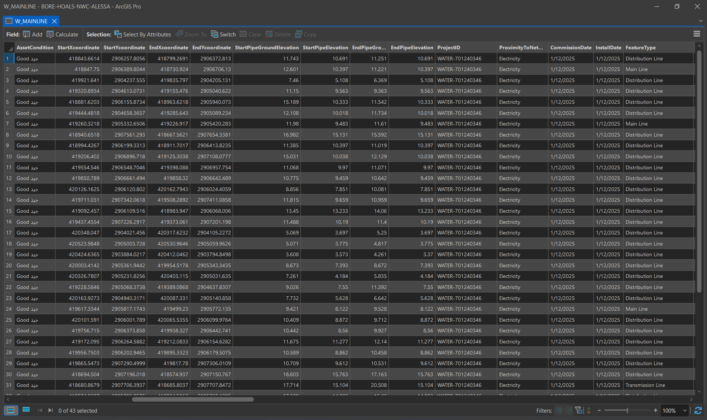
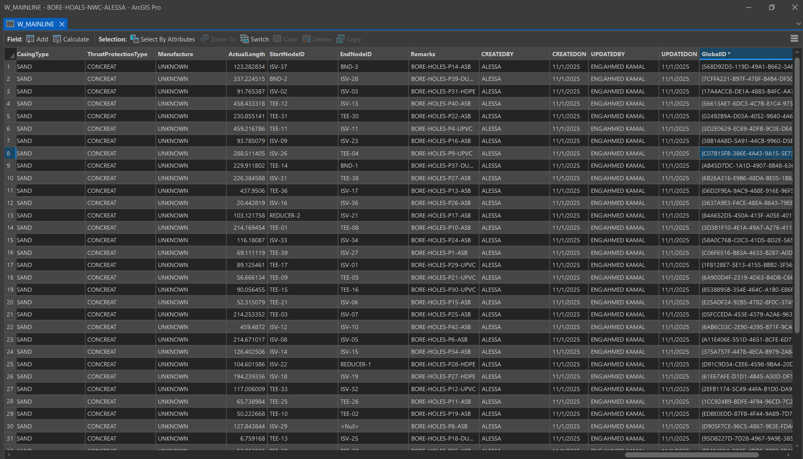

Project Gallery




Turning scattered field investigation records into a structured, searchable GIS spatial database aligned with National Water Company data standards.
Project Gallery


Project Overview
Borehole investigation data collected during geotechnical site studies was spread across separate field records with no unified structure. The National Water Company needed all records consolidated into a GIS database that could be spatially queried, quality-checked, and integrated into future engineering planning.
Designed and built the GIS spatial database for all borehole records, structured attribute data to meet NWC requirements, and performed systematic quality control checks to ensure accuracy and completeness before submission.
Key Contributions